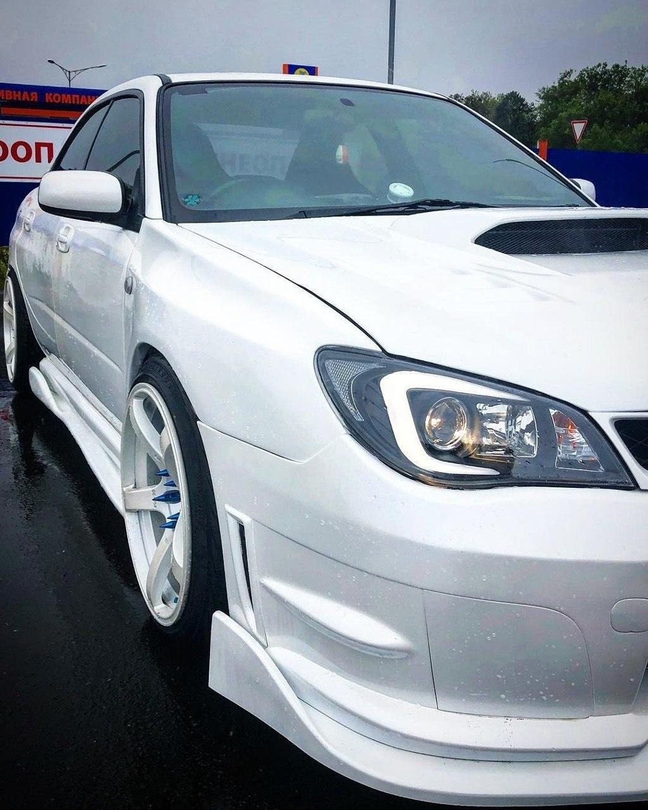
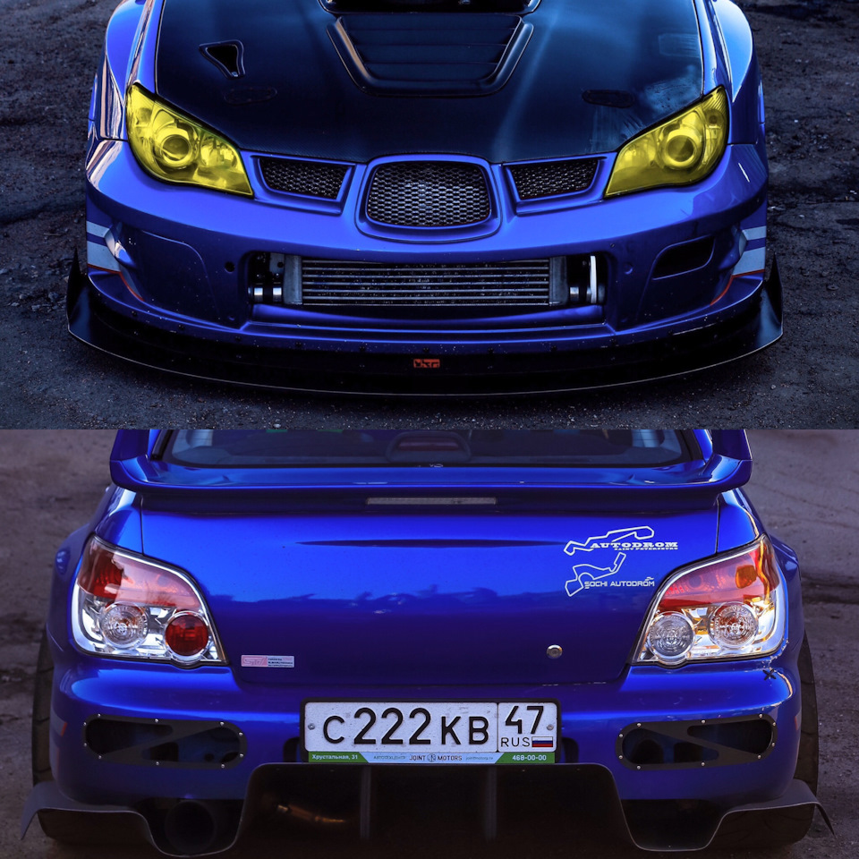
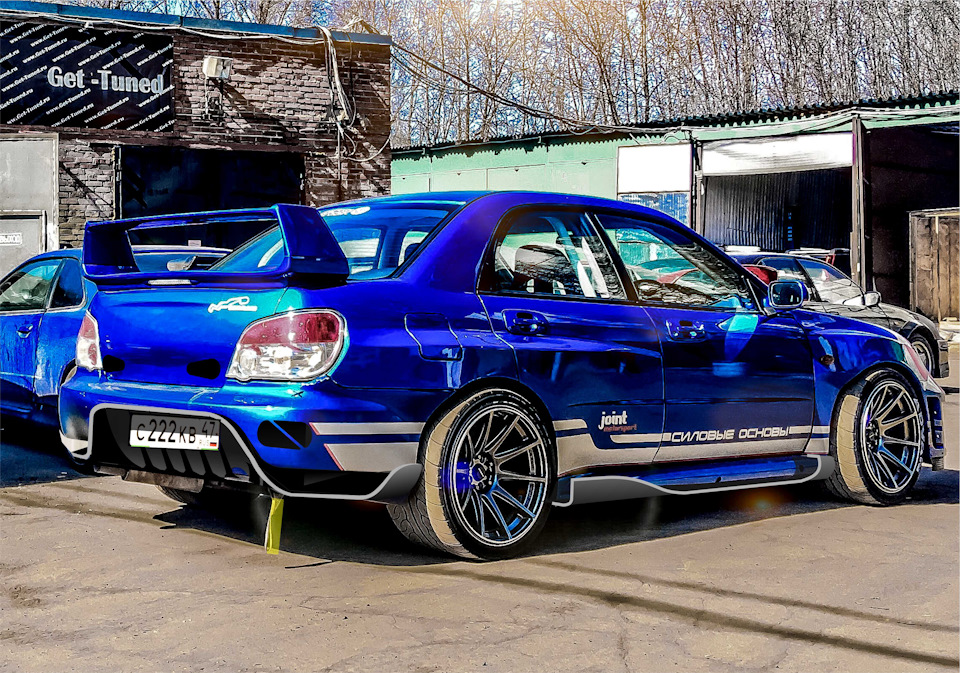

Философия: От компактного хэтчбека к солидному семейному автомобилю
Смена поколений в 2000 году стала для Impreza радикальной. Вторая генерация (кузова
GD для седана,
GG для универсала) сознательно отошла от легковесного образа предшественника, сделав ставку на солидность, безопасность и максимальную практичность. Главной задачей было предложить на глобальный рынок просторный, комфортабельный и невероятно надежный автомобиль, для которого фирменный полный привод Subaru являлся не опцией, а неотъемлемой частью характера, обеспечивающей безопасность в любую погоду.
Дизайн и конструкция: Монолитность как концепция
- Дизайн, созданный под руководством Андреаса Заппа, стал более «тяжеловесным» и скульптурным. Выразительные колесные арки, крупные фары и массивные бамперы формировали образ уверенного, крепкого автомобиля, а не спортивного снаряда.
- Практичный универсал GG получил особенно гармоничные пропорции и мгновенно стал хитом в странах с суровым климатом.
- Конструкция шасси была пересмотрена: для снижения стоимости и веса большинство базовых версий получили полузависимую заднюю подвеску с реактивными штангами, однако общая жесткость кузова и уровень пассивной безопасности выросли кратно.
Техническая основа: Фундамент надежности
Базовые версии оснащались проверенными рядом оппозитных атмосферных двигателей, ставших синонимом долговечности:
- EJ15/EJ16 (1.5-1.6 л): Для рынков, ориентированных на экономичность (Европа, Япония).
- EJ18 (1.8 л, 110-125 л.с.): Оптимальный баланс тяги, расхода и надежности. Самый распространенный двигатель для этого поколения.
- EJ20 (2.0 л, 115-140 л.с.): Более мощная и эластичная версия.
- EJ25 (2.5 л, ~165 л.с.): Характерный для рынка Северной Америки мотор с выдающимся крутящим моментом, но и с известной слабостью — склонностью к прогаранию прокладок ГБЦ.
Трансмиссия: 5-ступенчатая «механика» или 4-ступенчатый «автомат». Система полного привода варьировалась от простой
Part-Time AWD с вискомуфтой до активной
ACT-4 с электронным управлением, распределяющим момент в соотношении до 60/40.


Первый рестайлинг (2002-2005): Шлифовка имиджа
В 2002 году Impreza получила умеренный, но важный апдейт, нацеленный на усиление индивидуальности.
- Дизайн: Появились новые, более узкие и «злые» фары, измененные бамперы и решетка радиатора. Автомобиль выглядел собраннее и агрессивнее.
- Безопасность: На большинстве рынков две фронтальные подушки безопасности стали стандартным оборудованием.
- Техника: Состав агрегатов остался прежним, но проводились точечные доработки для соответствия ужесточающимся экологическим нормам.
Второй рестайлинг (2005-2007): Радикальная трансформация «Hawkeye»
В 2005 году Subaru совершила смелый шаг, кардинально изменив внешность модели, что разделило аудиторию на восторженных поклонников и ярых критиков.
- Визуальная революция: Появились знаменитые огромные овальные фары («Hawkeye»/«Ястребиный глаз»), интегрированные в единую линию с решеткой радиатора. Массивный бампер с «улыбкой» создал уникальный, ни на что не похожий облик.
- Качественный скачок в интерьере: Салон получил самые значительные улучшения: качественные мягкие пластики, новую рулевую колонку, лучшую отделку. Это был самый современный интерьер за всю историю поколения.
- Технические nuances: Линейка двигателей осталась прежней, но 4-ступенчатая АКПП на части рынков обзавелась функцией ручного переключения (Sportshift). Уровень базового оснащения (электропакет, аудиосистема) значительно вырос.
Эволюция позиционирования
За семь лет производства Impreza эволюционировала от просто нового семейного автомобиля до культового «всепогодного» инструмента, особенно в кузове универсал. Её репутация неубиваемой, проходимой и практичной машины для жизни окончательно сформировалась в этот период.
Феномен практичности и народная любовь
Обычная, безнаддувная Subaru Impreza GD/GG выполнила свою миссию на 100%. Она стала иконой практичности, надежности и всепогодной безопасности для миллионов семей по всему миру. Её ключевой успех — в отсутствии амбиций быть спортивной, при этом оставаясь азартной и уверенной в управлении благодаря низкому центру тяжести оппозитного двигателя и полному приводу.
Почему её выбирают сегодня? Плюсы и реалии владения
Неоспоримые плюсы:
- Феноменальная проходимость для легкового автомобиля, особенно в зимних условиях.
- Выдающаяся надежность атмосферных двигателей EJ18 и EJ20 при своевременном обслуживании.
- Практичность универсала (GG) с огромным багажником и удобной посадкой.
- Уверенная управляемость и высокая курсовая устойчивость на трассе.
- Огромное комьюнити и доступность запчастей (кроме уникальных элементов кузова «хаммер»).
Суровые реалии и «болевые точки»:
- Коррозия — враг №1. Требуется тщательнейший осмотр арок, порогов, креплений подвески и днища.
- Двигатель EJ25 (2.5 л): Высокий риск проблем с прокладкой головки блока цилиндров (ГБЦ) после 100-150 тыс. км. Ремонт сложный и дорогой.
- Возраст: Общий износ всех резинотехнических изделий, подвески, электронных компонентов.
- Расход топлива выше, чем у моноприводных одноклассников.
Культурное значение и коллекционный вектор
Сегодня Impreza второго поколения переживает период второго признания. Её ценят не за динамику, а за честный, неукрашенный характер и абсолютную функциональность. Ухоженный универсал в кузове «хаммер» (2005-2007) становится объектом интереса для ценителей японского дизайна 2000-х. Эта модель — живое напоминание об эпохе, когда Subaru создавала автомобили, рассчитанные на 300+ тысяч километров пробега в самых тяжелых условиях. Она не стремилась быть культовой, но стала ею благодаря своей непотопляемой сущности, заслужив звание одной из самых практичных и надежных японских икон своего времени.

 89081317488
89081317488

 8(908)131-74-88
8(908)131-74-88.svg) fayther2@yandex.ru
fayther2@yandex.ru